实验思考题
Thinking 6.1
Q： 示例代码中，父进程操作管道的写端，子进程操作管道的读端。如果现在想让父进程作为“读者”，代码应当如何修改？
A： 只需要调换父子进程操作的内容即可——
int main() {
//...
switch (fork()) {
case -1 :
break;
case 0 :
close(fildes[0]); /* Read end is unused */
write(fildes[1], "Hello world\n", 12); /* Write data on pipe */
close(fildes[1]); /* Child will see EOF */
exit(EXIT_SUCCESS);
default :
close(fildes[1]); /* Write end is unused */
read(fildes[0], buf, 100); /* Get data from pipe */
printf("child-process read:%s",buf); /* Print the data */
close(fildes[0]); /* Finished with pipe */
exit(EXIT_SUCCESS);
}
}Thinking 6.2
Q： 上面这种不同步修改 pp_ref 而导致的进程竞争问题在 user/fd.c 中的 dup 函数中也存在。请结合代码模仿上述情景，分析一下我们的 dup 函数中为什么会出现预想之外的情况？
A： dup函数的作用时将oldfdnum所代表的文件描述符的指向的数据完全复制给newfdnum文件描述符，一共包含两个过程——
- 将
newfd所在的虚拟页映射到oldfd所在的物理页 - 将
newfd的数据所在的虚拟页映射到oldfd的数据所在的物理页
考虑如下代码段
// 子进程
read(p[0], buf, sizeof(buf));
// 父进程
dup(p[0], newfd);
write(p[1], "Hello", 5);分析过程如下：
- fork结束后，子进程先进行。但是在
read之前发生了时钟中断，此时父进程开始进行进行。 - 父进程在
dup(p[0])中，已经完成了对p[0]的映射，这个时候发生了中断，还没有来得及完成对pipe的映射。 - 此时回到子进程，进入
read函数，结果发现ref(p[0]) == ref(pipe) == 2, 认为此时写进程关闭。
Thinking 6.3
Q： 阅读上述材料并思考：为什么系统调用一定是原子操作呢？如果你觉得不是所有的系统调用都是原子操作，请给出反例。希望能结合相关代码进行分析。
A： 在 syscall 对应的异常处理程序 handle_sys 中，我们使用了汇编宏 CLI 来禁用全局中断，因此系统调用时不会被中断，是原子操作。
NESTED(handle_sys,TF_SIZE, sp)
SAVE_ALL // Macro used to save trapframe
CLI // Clean Interrupt Mask
nop
.set at // Resume use of $at
// ...
END(handle_sys)Thinking 6.4
Q： 仔细阅读上面这段话，并思考下列问题
- 按照上述说法控制 pipeclose 中 fd 和 pipe unmap 的顺序，是否可以解决上述场景的进程竞争问题？给出你的分析过程。
- 我们只分析了 close 时的情形，在 fd.c 中有一个 dup 函数，用于复制文件内容。试想，如果要复制的是一个管道，那么是否会出现与 close 类似的问题？请模仿上述材料写写你的理解。
A： 分析如下
- 可以解决。由于
ref(p[0])始终小于ref(pipe), 因此如果先解除p[0]的映射，则ref(p[0])更要小于ref(pipe)，永远不会出现ref(p[0]) == ref(pipe)。 dup函数也会出现与close类似的问题，pipe的引用次数总比fd要高。当管道的dup进行到一半时， 若先映射fd，再映射pipe，就会使得fd的引用次数的+1先于pipe。这就导致在两个map的间隙，会出现pageref(pipe) == pageref(fd)的情况。这个问题也可以通过调换两个map的顺序来解决。
Thinking 6.5
Q： bss 在 ELF 中并不占空间，但 ELF 加载进内存后， bss 段的数据占据了空间，并且初始值都是 0。请回答你设计的函数是如何实现上面这点的？
A： 对于bss段中和text&data段共同占据一个页面的部分，就使用user_bzero将这一部分置零；对于bss段其它部分，仅使用syscall_mem_malloc分配页面而不映射到任何内容。
Thinking 6.6
Q： *为什么我们的 .b 的 text 段偏移值都是一样的，为固定值？
A： 因为在user.lds文件中将所有.b文件的text段偏移量都设置为0x00400000。
. = 0x00400000;
_text = .; /* Text and read-only data */
.text : {
*(.text)
*(.fixup)
*(.gnu.warning)
}Thinking 6.7
Q： 在 shell 中执行的命令分为内置命令和外部命令。在执行内置命令时 shell 不需要 fork 一个子 shell，如 Linux 系统中的 cd 指令。在执行外部命令时 shell需要 fork 一个子 shell，然后子 shell 去执行这条命令。据此判断，在 MOS 中我们用到的 shell 命令是内置命令还是外部命令？请思考为什么 Linux 的 cd 指令是内部指令而不是外部指令？
A： 分析如下
- shell命令是外部命令，因为在执行shell命令时，当前进程通过
fork产生一个子进程，也就是子shell，然后这个子shell来运行该命令所对应的可执行文件。 - linux中的内部命令实际上是shell程序的一部分，其中包含的是一些比较简单的linux系统命令，这些命令由shell程序识别并在shell程序内部完成运行，通常在linux系统加载运行时shell就被加载并驻留在系统内存中。因为
cd指令非常简单，将其作为内部命令写在bashy源码里面的，可以避免每次执行都需要fork并加载程序，提高执行效率。
Thinking 6.8
Q： 在哪步， 0 和 1 被 “安排” 为标准输入和标准输出？请分析代码执行流程，给出答案。
A： 在init.c的umain函数中将0和1分别被设置为了标准输入和标准输出。相关代码如下
//将0关闭，随后使用opencons函数打开的文件描述符编号就被设置为零为0
close(0);
if ((r = opencons()) < 0)
user_panic("opencons: %e", r);
if (r != 0)
user_panic("first opencons used fd %d", r);
// 然后通过dup函数把1设置为标准输出
if ((r = dup(0, 1)) < 0)
user_panic("dup: %d", r);Thinking 6.9
Q： 在你的 shell 中输入指令 ls.b | cat.b > motd。
- 请问你可以在你的 shell 中观察到几次 spawn？分别对应哪个进程？
- 请问你可以在你的 shell 中观察到几次进程销毁？分别对应哪个进程？
A： 通过增加调试信息可以看出
- shell中进行了2次
spawn，这两次生成的子进程分别用于执行ls.b和cat.b - shell中进行了2次进程销毁，这2个进程分别是shell执行
ls.b和cat.b时通过spawn生成的子进程。
实验难点图示
我认为该实验的难点主要包含两个难点——和管道相关的内存分配、spawn函数的处理流程
和管道相关的内存分配
子进程和父进程的内存空间中都分为写端fd和读端fd分配了一个虚拟页，但是子进程和父进程的读端所在的虚拟页映射到了同一个物理页，同样他们的写端所在的虚拟也也都映射到了同一个物理页。
此外，父子进程中这四个fd所对应的文件数据都位于同一个物理页。所以，一个管道实际上只需要占用3个物理页。图示如下——

spawn函数的处理流程
spawn函数的处理流程如下图所示
体会与感想
Lab6要求我们完成pipe机制和实现一个简单的shell，实验任务比较简单，但是与之相关的很多函数理解起来还是有点困难。不过，OS实验课总算是告一段落了，通过自己动手实现一个简单的操作系统，不仅让我们收获了很多成就感，同时也让我们对理论课知识有了更深刻的理解。